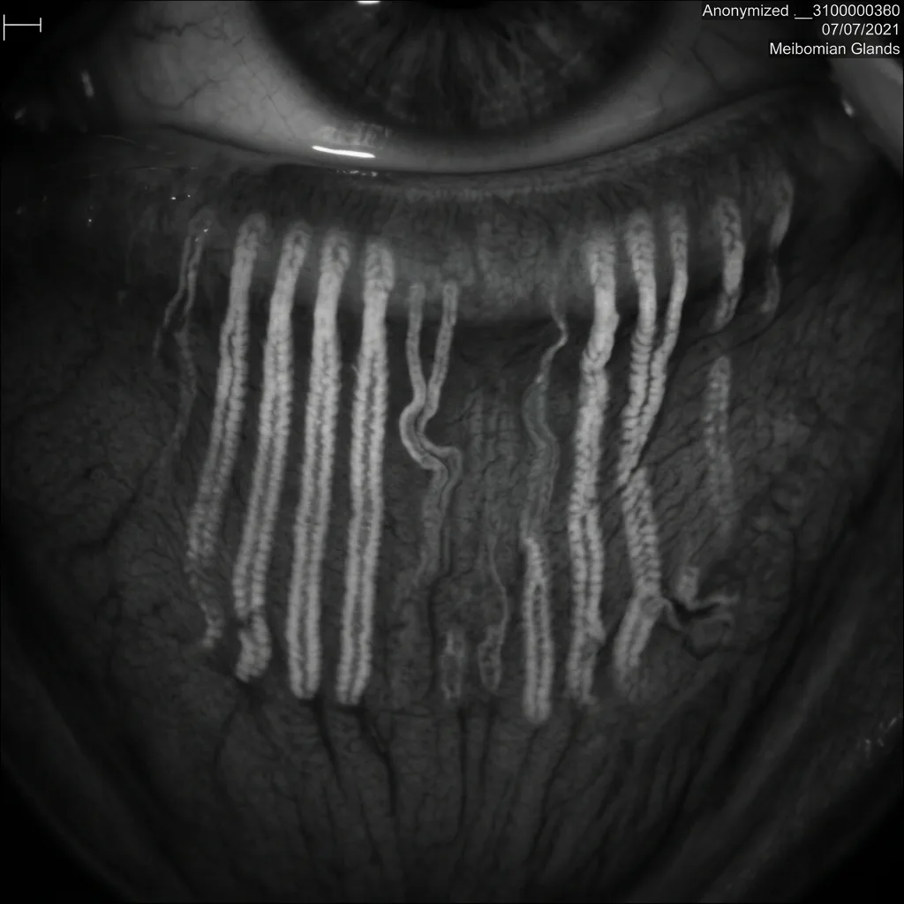

New Jersey's Leading
Dry Eye Specialists
Break free from the endless cycle of temporary eye drops. Our board-certified specialists diagnose and treat the true biological root cause of your dry eyes—restoring natural moisture to end chronic burning, grittiness, and screen fatigue.
Recognizing Chronic Dry Eye Syndrome:
Signs & Symptoms
If these symptoms sound familiar, you need clinical relief—not just another bottle of drops. Chronic dry eye is a progressive disease that impacts your productivity, sleep, confidence, and daily comfort. Identifying your warning signs is your first step toward targeted treatment.
Burning & Screen Fatigue
Your eyes sting by midday. Constant heat and strain make screen-heavy workdays a countdown to relief you never get.
Grittiness (Sandpaper Eyes)
Mornings are the worst — opening your eyes feels like your eyelids are scraping across dry, coarse sandpaper.
Reflex Tearing (Watery Eyes)
Excessive watering that spills over without providing genuine moisture or relief to dry, irritated tissues.
Blurry Vision & Glare
Fluctuating vision and headlight glare make reading and evening drives stressful — or something you avoid entirely.
Redness & Social Discomfort
Constantly red, bloodshot eyes leave you feeling self-conscious and wondering if people notice in social settings.
Stringy Mucus Discharge
Sticky mucus threads in the eye corners as your tear film breaks down and struggles to stay properly lubricated.
Identified Your Symptoms? Pinpoint the Root Cause
Don't wait for progressive gland loss. Our board-certified specialists in Livingston, Denville & Newark offer diagnostic LipiView® scans.
The OTC Drop Trap:
Why More Drops Won't Fix Dry Eyes
Standard eye drops only mask symptoms for minutes. They are mostly water, meaning they evaporate off the ocular surface almost instantly. If your Meibomian glands are blocked—which is the root cause in 86% of dry eye cases[1]—your tear film lacks the protective oil layer needed to seal in moisture.[2] Without it, you are pouring water into a leaky bucket while active gland damage quietly progresses.
1. Lipid Layer (Outer)
Produced by the Meibomian glands in your eyelids. This oily layer seals the tears and prevents them from evaporating too quickly.[2]
2. Aqueous Layer (Middle)
Produced by the lacrimal glands. This watery layer makes up most of the tear, providing essential nutrients, oxygen, and washing away particles.
3. Mucin Layer (Inner)
Produced by goblet cells on the eye's surface. This mucous layer acts like an adhesive, helping the watery layer stick evenly to the eye.
The OTC Drop Trap
Cost: ~$360+/year (recurring)
- ❌ Out-of-pocket expenses that compound annually
- ❌ Delaying diagnosis while active gland damage progresses
- ❌ Risk of preservative toxicity from frequent application[5]
The Precision Route
Value: Definitive root-cause resolution
- ✅ A clinical assessment to pinpoint your failing tear layer
- ✅ Early intervention to save gland structures from atrophy
- ✅ Customized medical therapies covered by insurance
Calculate Your "Drop Loop" Cost
Symptom management is a compounding financial leak. Find out how much you are spending on temporary relief over time.
At this level, you are on track to lose over 300 hours of focused productivity and comfortable vision. Worse, untreated Meibomian Gland Dysfunction leads to progressive, irreversible gland loss.
Understanding Dry Eye
Through Life Stages
Dry eye can affect anyone, but the underlying causes often shift as we progress through different stages of life.
Children & Teens
If your child complains of tired eyes after homework or gaming, screen habits — not "just allergies" — may be the cause.
- Screen Time: Excessive use of digital devices reduces blink rates, leading to evaporative dry eye.[4]
- Allergies: Seasonal allergies and antihistamine use can severely dry out the ocular surface.
- Contact Lenses: Improper wear schedules or poor hygiene can disrupt the tear film.
Young Adults (20s-30s)
Long workdays on screens and contact lens wear often show up here — even when your vision prescription is perfect.
- Digital Eye Strain: Prolonged screen use for work and leisure leading to computer vision syndrome.
- Hormonal Changes: Pregnancy or birth control medications can alter tear production.
- Post-LASIK: Temporary nerve disruption from refractive surgery can reduce tear signals.
Middle Age (40s-50s)
If you're in your 40s and screens are unbearable by afternoon, blocked oil glands — not just "getting older" — are often to blame.
- Meibomian Gland Dysfunction (MGD): The leading cause of dry eye; oil glands in the eyelids become blocked or inflamed.
- Hormonal Shifts: Perimenopause and menopause significantly impact the composition of tears.
- Medications: Increased use of antihistamines, antidepressants, and blood pressure medications.
Seniors (60+)
Burning eyes after reading or driving aren't an inevitable part of aging — they're often treatable when the root cause is identified.
- Gland Atrophy: Age-related reduction in overall tear production volume.
- Eyelid Laxity: Changes in eyelid structure reduce the mechanical efficiency of blinking and spreading tears.
- Post-Surgery: Cataract surgery can temporarily disrupt the ocular surface and tear film stability.
Standard Eye Care vs.
Specialized Dry Eye Care
Most general eye clinics treat dry eye as a temporary inconvenience. We treat it as a chronic, multi-faceted disease requiring medical-grade diagnostics and customized treatments.
| Clinical Feature | Standard Eye Care | Marano Specialty Dry Eye Center |
|---|---|---|
| Diagnostic Approach | Basic eye chart exam & symptom checklist | ✓ LipiView® Interferometry & TearLab® Osmolarity |
| Root Cause Analysis | Symptom-based guesswork | ✓ Infrared Meibography (visualizing gland structure) |
| Treatment Diversity | Generic OTC drops & warm compresses | ✓ Tailored multi-layered drop therapies & office procedures |
| In-Office Procedures | Unavailable / not offered | ✓ Punctal Plugs, NearTear® & AmbioDisk™ |
| Insurance & Rx Support | Standard Rx submission only | ✓ Dedicated prior-authorization team for brand drugs |
Precision Diagnostics
We use state-of-the-art technology to pinpoint the exact root cause of your dry eye, allowing us to customize a treatment plan for your specific needs.
Tap any diagnostic card to flip it and see sample results
LipiView® Interferometry
See if your protective oil layer is evaporating too fast.
Click to flipLipiView®
Measures your lipid layer thickness with nanometer precision and captures your blink dynamics to identify if you are fully blinking.
Meibography
Map your actual oil glands in under 60 seconds.
Click to flipMeibography
Utilizes advanced infrared imaging to visualize the Meibomian glands inside your eyelids, assessing them for structural health.

Tear Break-Up Time
Track exactly how many seconds tears stay on your eye.
Click to flipTBUT Testing
Uses specialized fluorescein dye to measure exactly how many seconds it takes for your tear film to break apart between blinks.
Schirmer's Test
Assess if your eyes are producing enough raw moisture.
Click to flipSchirmer's Test
A simple paper strip test placed gently on the lower eyelid to measure your baseline aqueous tear production over 5 minutes.
Osmolarity Testing
Measure the salt concentration ('dryness level') of tears.
Click to flipTearLab Osmolarity
Measures the salt concentration of your tears. High osmolarity is a proven biomarker indicating dry eye disease.[6]
Inflammatory Markers
Test for the specific inflammatory markers driving pain.
Click to flipInflammaDry
A rapid test detecting elevated levels of MMP-9, a key inflammatory biomarker that is elevated in patients with dry eye.[7]
Ready to See Your Gland Health?
Pinpoint tear film breakdown with FDA-cleared LipiView® interferometry and tear film osmolarity testing.
Advanced Treatments
Your specialist will match the right therapy after diagnostics — here's many of prescription medications and in-office procedures we offer.
Prescription Medications
Restasis® (Cyclosporine 0.05%)
Anti-Inflammatory DropHow It Works
Your immune system can mistakenly attack your own tear glands, causing inflammation that halts tear production. Restasis contains cyclosporine, which calms this specific immune response—like telling overactive immune cells to stand down—so your glands can produce tears naturally again.
Calms Response
Restored
Xiidra® (Lifitegrast 5%)
Targeted Inflammation BlockerHow It Works
Dry eye inflammation starts when certain immune cells (T-cells) stick to the surface of your eye. Xiidra works by blocking the molecular "handshake" (LFA-1/ICAM-1 interaction) that lets these cells latch on, reducing inflammation directly at the source.
Connection
Heals
Vevye® (Cyclosporine Ophthalmic Solution 0.1%)
Water-Free Anti-Inflammatory DropHow It Works
Vevye® is a water-free cyclosporine drop formulated in a unique semifluorinated alkane vehicle. Because it contains no water, it does not require harsh preservatives, oils, or surfactants. It spreads rapidly across the ocular surface, delivering anti-inflammatory medication directly into the target tissues to reduce surface inflammation and restore natural tear production.
Spread
Cleared
Tryptyr® (TRPM8 Agonist Drop)
Sensory Receptor Eye DropHow It Works
Tryptyr is a unique eye drop that targets the TRPM8 cold-sensing receptors on the surface of your eye. By triggering these receptors with a mild cooling sensation, it signals the lacrimal gland to produce reflex tears and encourages natural blinking, providing refreshing moisture.
Activated
& Blinking
Miebo® (100% Perfluorohexyloctane)
Evaporation Shield DropHow It Works
Formulated as a water-free shield, Miebo® acts as a microscopic barrier that mimics your eye's natural lipid layer. As the first FDA-approved treatment specifically targeting evaporative dry eye disease, it directly addresses lipid layer degradation—a common biological decline that occurs as our meibomian glands degrade with age. It locks in moisture instantly, preventing tear evaporation without the blur or preservatives common in traditional drops.
Forms
Prevented
Cequa® (Cyclosporine 0.09%)
Nanomicelle TechnologyHow It Works
Similar to Restasis but utilizing a breakthrough delivery technology called NCELL™ nanomicelles. These microscopic carriers help the medication penetrate deeper into your eye tissue, delivering a stronger dose of immune-calming cyclosporine exactly where it's needed most.
Penetration
Calming Effect
In-Office Procedures
Punctal Plugs
Tear Conservation TherapyHow It Works
Micro-scale, biocompatible shields placed in the tear ducts to naturally conserve your own real tears. Think of it as a smart valve: by slowing drainage, it allows your eyes to bathe in their own natural, nutrient-rich moisture all day.
Longer
NearTear®
Intranasal NeurostimulationHow It Works
NearTear uses tiny electrical impulses delivered inside your nose to activate the same natural nerve pathways that trigger tear production. Think of it as gently "turning up the volume" on your body's own tear-making system. The treatment stimulates both the aqueous (watery) and lipid (oily) components of your tears.
Impulse
Activation
Tears Produced
AmbioDisk™
Amniotic Membrane Biological TherapyHow It Works
AmbioDisk™ is a sutureless, dehydrated amniotic membrane graft placed comfortably on the corneal surface during a brief in-office procedure under a protective bandage contact lens. Rich in regenerative growth factors, biological nutrients, and anti-inflammatory cytokines, it actively accelerates corneal re-epithelialization, rejuvenates damaged ocular surface nerves, and delivers profound healing for severe, refractory dry eye disease.
Damage
Placement
Tissue Healing
Meet Our Specialist Team
Led by Dr. Matthew J. Marano, Jr., MD | Medical Director & Chief of Ophthalmology
At Marano Eye Care, our board-certified dry eye specialists diagnose and treat the root biological causes of dry eye — not just the symptoms.
Medical Director Dr. Matthew J. Marano, Jr., MD is a leading ophthalmologist with over three decades of clinical practice in Northern New Jersey. He earned his medical degree from George Washington University and completed undergraduate studies at Columbia University.
Dr. Marano serves as Chief of Ophthalmology at Cooperman Barnabas Medical Center and St. Michael's Medical Center, and has spent decades educating physicians in advanced ophthalmic care. Verify Board Certification on ABO →
Our Practice Credentials
- Board Certification: Board-Certified Eye Specialists & Surgeons
- Clinical Leadership: Dr. Marano is Chief of Ophthalmology at Cooperman Barnabas Medical Center and St. Michael's Medical Center
- Advanced Procedures: Punctal Plugs, NearTear®, AmbioDisk™ & Custom Drop Therapies
- Diagnostic Excellence: In-Office LipiView® Interferometry & TearLab® Osmolarity
Patient Success Stories
Don't just take our word for it. Hear from local Northern New Jersey patients who have found lasting dry eye relief at our clinics.
"Years of screen-time burning left me dreading every workday. After a LipiView® scan revealed blocked Meibomian glands, Dr. Marano started me on Xiidra® — within six weeks, I could work a full day without constant stinging."
Your 3-Step Pathway to Lasting Relief
Resolving chronic dry eye doesn't have to be complicated. We've structured a clear, seamless path to restoring your comfort.
15-Min Precision Scan
We use non-invasive LipiView® interferometry and TearLab® osmolarity testing to map your tear chemistry and image your actual oil glands. No pain, no guesswork.
Tailored Medical Plan
Our board-certified eye specialists design a target-specific regimen combining advanced in-office procedures and target-specific prescription drops.
Restore Natural Tears
By treating the root cause (MGD/inflammation), we reactivate your own natural tear film, allowing you to live, work, and drive without constant burning.
Frequently Asked Questions
Common questions patients ask before their first visit.
While dry eye is often a chronic condition, it is highly manageable. With the right diagnostic approach and a tailored treatment plan, we can significantly reduce your symptoms, prevent further damage to the ocular surface, and restore your quality of life.
Timeline varies by patient and treatment. Some patients feel improvement within days of starting prescription drops or having punctal plugs inserted. In-office procedures like NearTear® often provide relief within a few weeks, while prescription drops like Restasis® or Xiidra® may take 2 to 12 weeks to reach full effect. Most patients notice significant improvement in comfort and screen-time endurance within 2 to 6 weeks. We schedule follow-up checks at 1 month and 3 months to monitor gland function and adjust your plan as your tear film stabilizes.
Many diagnostic tests and prescription medications (like Restasis or Xiidra) are covered by standard health or vision insurance, though co-pays vary. Some advanced in-office procedures or specific custom options may be considered out-of-pocket expenses. Our team will verify your benefits and explain all costs prior to treatment.
No. All of our diagnostic tests—including LipiView® interferometry and infrared Meibography—are completely non-invasive, quick, and touch-free. For procedures like Punctal Plugs, we use numbing drops to ensure you feel no pain or scratchiness. Most patients describe the sensation as a mild cooling or pressure, and you can resume normal activities immediately after your visit.
Your first visit typically takes 45–60 minutes. We'll review your symptom history, then run non-invasive diagnostic scans — including LipiView® interferometry and infrared Meibography — to image your oil glands and measure your tear film. You'll see your results on screen, and your specialist will explain which tear layer is failing and recommend a customized treatment plan. No referral is required.
Drugstore drops act as a temporary band-aid, masking symptoms for minutes without treating the underlying cause. If your meibomian glands are blocked, tears will continue to evaporate instantly. Over time, untreated gland blockage leads to irreversible gland atrophy (shrinkage). Our treatments target the root cause—inflammation and gland blockages—to restore your eyes' natural ability to produce and maintain tears, preventing permanent damage.
Reclaim Clear, Comfortable Vision
Stop managing symptoms with temporary drops. Request a comprehensive diagnostic scan and begin your pathway to lasting comfort today.
Visit Our Dry Eye Clinics in Essex & Morris County
Livingston Office
Denville Office
Newark Office
- staff@mec1.net
- Mon-Thu: 9:00 AM - 5:00 PM | Fri: 8:00 AM - 4:00 PM
Request Received!
Thank you! Your self-assessment and consultation request have been safely received by Dr. Marano's team. A clinical coordinator will call you within one business day to confirm your personalized diagnostic evaluation. If you need immediate assistance, please reach out to us at (973) 322-0100.